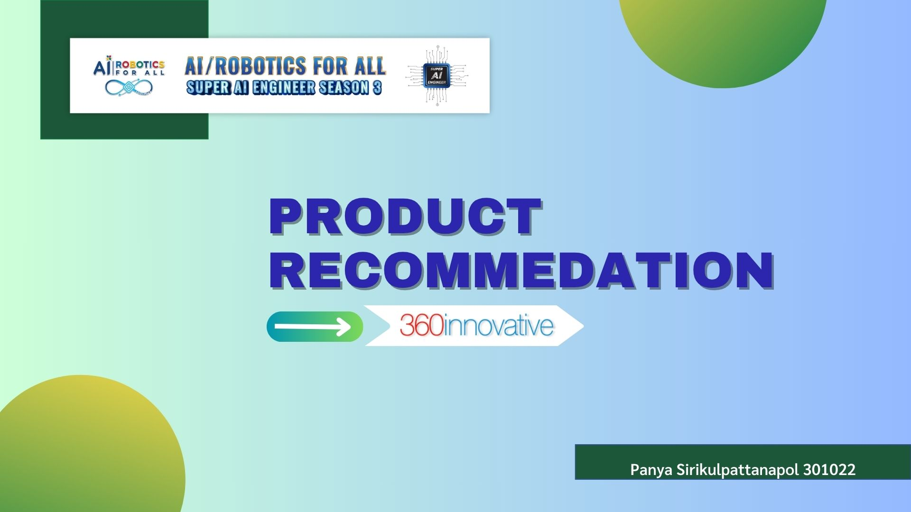

About Me
Hello! I'm a Lead Data Scientist with a passion for building intelligent systems that solve real-world problems. With expertise in Algorithms, Neural Networks, and Advanced AI/ML techniques, I specialize in developing end-to-end machine learning solutions from concept to production deployment.
My journey spans across Data Science, Mechanical Engineering, and Digital Marketing, giving me a unique cross-functional perspective. I've built demand forecasting models, OCR solutions using large language models like GPT and Gemini, and AI agents that streamline business operations.
Beyond coding, I bring strong analytical skills with expertise in complex decision-making and risk assessment — skills honed during my years as a Design Engineer working on precision manufacturing and quality systems.
Currently, I'm focused on Agentic AI — exploring how autonomous AI systems can transform workflows and create new possibilities. I believe the future belongs to AI that doesn't just respond, but thinks, plans, and acts.
Key Highlights
- AI/ML Specialist
- 10+ Years Experience
- 15+ Projects Completed
- Team Leadership
- Mechanical Engineering
- Bangkok, Thailand
Technical Skills
AI & Machine Learning
Programming
Tools & Platforms
Experience
Lead Data Scientist
CPF IT Center Co., Ltd (AXONS) | Bangkok
- Developed demand forecasting and product recommendation models
- Implemented OCR solutions using Gemini and GPT models
- Built AI agents for IT support operations
- R&D in Agentic AI for autonomous systems
Data Scientist
360 Innovative Co., Ltd | Bangkok
- Built product recommendation system for Daytriptour
- SQL data analysis and preprocessing pipelines
- MySQL integration and server deployment
Technical Engineer
Pyroen Co., Ltd | Bangkok
- Built document systems using Microsoft Power Platform
- Implemented waste management systems
- Quality monitoring and inspection reporting
Sales Engineer
DTM Thailand Co., Ltd | Bangkok
- Technical support for Siemens NX software
- User training and troubleshooting
Design Engineer
NSK Asia Pacific Technology Centre | Chonburi
- Created manufacturing drawings using CATIA
- 6-month intensive training in Japan
- Bearing failure analysis and improvements
Projects
A selection of my recent work in AI, Machine Learning, and Data Science.

Recommendation System
Product recommendation engine for Daytriptour using historical travel data and collaborative filtering.
Real/Fake Numbers
AI-powered number verification and classification system using deep learning techniques.
CMSK Chatbot
NLP-based Question Answering chatbot developed for Super AI Engineer Season 3.
RL Robot Navigation
Reinforcement Learning robot trained to navigate environments autonomously.
Poverty Rate Prediction
Data Science project predicting poverty rates using socioeconomic indicators.
Liver Lesion Detection
Computer Vision model for detecting liver lesions in medical imaging.
Awards & Certifications
NLP: CMSK Chatbot (QA)
Super AI Engineer Season 3
Robotics: RL Robot Navigation
Super AI Engineer Season 3
Data Science: Poverty Rate Prediction
Super AI Engineer Season 3
JLPT N4 – Japanese Language Proficiency
Japan Foundation
Get In Touch
I'm always open to discussing new projects, creative ideas, or opportunities.